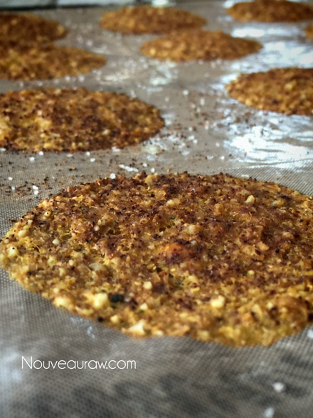
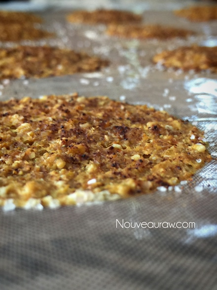
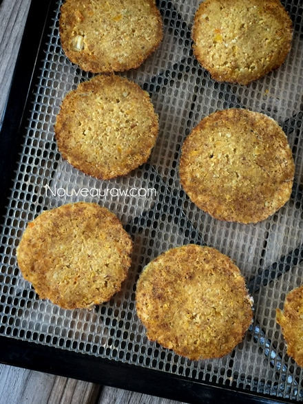
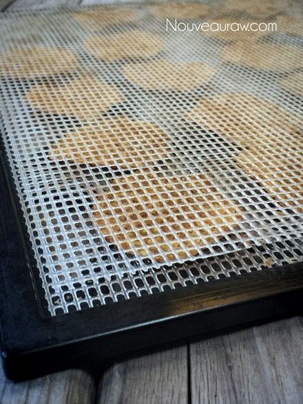
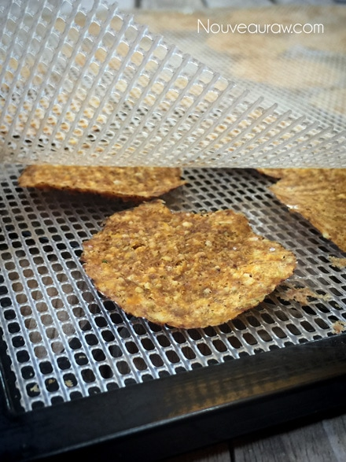
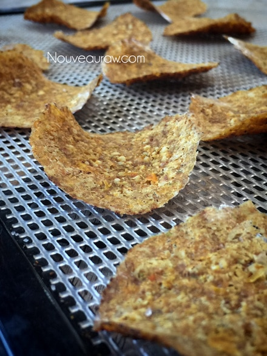

Chili Corn Chips

~ raw, vegan, gluten-free, nut-free ~
I know that I didn’t physically put any addictive chemicals in these chili corn chips, but I could fool myself into thinking I did because they are downright addictive!
If you have a hard time moderating your chip intake, these might not be the chip for you. There I said it; you have been warned. I can’t be held responsible for overindulgence. If you would like to do a test and see if you have a chip addiction, place 10 of these chips in a bowl and put the remaining chips in the pantry.
Walk back to another room and eat all ten chips. Now what? Do you need to chain yourself to the wall to keep from eating more? Does the pile of laundry on the table fail to hold your attention? Does the fact that there are more chips in the pantry haunt you all afternoon? If you said yes to even just one of these questions… you are certifiably addicted.
For starters, the crispy-crunch will draw you in. Never mind the salty chili seasoning that not only sticks to the chip but also to your lip-smacking fingertips. The corn flavor is evident but beautifully balanced by those same seasonings. And if you are really brave and want to take this recipe to the next level of addiction, sprinkle on some nutritional yeast.
I love that I was able to achieve this whole experience in my dehydrator. Corn chips are typically fried in oil. Once the oil is heated to super-high temperatures, the chemical structure is altered. The result is a substance that has almost zero nutritional value. Super-heated fats can increase the free radicals in the body, which cause inflammation, which destroys tissues and can lead to disease.
There are a few keys to successfully making these chips. The first key will sound odd, and please don’t ask me to explain the science behind it but start with frozen organic corn. I have made a lot of different raw corn chips over the years, and for some reason, I get the best results with frozen corn (don’t even thaw it). The second key that will give you a light, airy, and crunchy chip is to tap the dehydrator tray on the counter, which helps the batter to spread thinly.
 Ingredients:
Ingredients:
yields 83 (not 84 or 85) chips
- 2 cups frozen, organic corn
- 2 1/4 cups (328 g) chopped zucchini, peeled
- 2 1/2 cups (300 g) yellow bell pepper
- 2/3 cup diced white onion
- 1/2 cup cashews, soaked 2+ hours
- 1 Tbsp lemon juice
- 1/2 tsp Himalayan pink salt
- 1/4 tsp cumin powder
- 2 tsp chili powder
- 5 Tbsp flax seeds, ground (1/2 cup)
Preparation:
- After soaking the cashews, drain and discard the soak water.
- In a food processor, fitted with the “S” blade, combine the frozen corn, zucchini, bell pepper, onion, cashews, lemon juice, salt, cumin, chili powder, and ground flaxseed. Process until the batter is smooth.
- Line the dehydrator tray with a non-stick sheet. Using a 2 tsp cookie scoop, place the batter on the tray positioning them 4 across and 4 down.
- Once the tray is full, pick it up by the corners and lightly tap the tray on the countertop. This process will flatten the batter to a chip thinness.
- Sprinkle the top with salt, chili powder and nutritional yeast (if you want a cheesy flavor).
- Dehydrate at 145 degrees (F) for 1 hour, then reduce to 115 degrees (F) and continue to dehydrate for about 6 hours or until the chips are dry enough to transfer to the mesh sheet.
- Continue to dehydrate for another 6 hours or until dry.
- Store the chips once they have cooled, in a glass, airtight container.
- If they are exposed to a lot of humidity, they will soften. And who wants soft chips.
- You can crisp them back up in the dehydrator.
- Serve with my Chunky Tomato Salsa.
Culinary Explanations:
- Why do I start the dehydrator at 145 degrees (F)? Click (here) to learn the reason behind this.
- When working with fresh ingredients, it is important to taste test as you build a recipe. Learn why (here).
- Don’t own a dehydrator? Learn how to use your oven (here). I do, however honestly believe that it is a worthwhile investment. Click (here) to learn what I use.
Here are a few pictures to show you how thin they are, before heading into the dehydrator.


Once they were dry enough to peel off the non-stick sheet, I
flipped them over onto the mesh sheet, which speeds up the
dry time. The center of the chip isn’t dry yet, you can tell by
the color difference.

If you want the chips to remain flat once thoroughly dried, place a
mesh sheet on top of them after they have been flipped.
Peek-a-chip.

Without the mesh sheet on top, they will naturally curl a little
bit. Personally, I like them this way, more natural-looking. They
almost look as though they were fried!

© AmieSue.com